ภาพรวมบทนี้ memory ที่เร็วมักเล็กและแพง memory ที่ใหญ่มักช้าและถูก บทนี้ตอบว่า ทำอย่างไรให้ได้ memory ที่ "ดูเหมือน" ทั้งเร็วและใหญ่ คำตอบคือ memory hierarchy + caching ซึ่งอาศัย principle of locality
เนื้อหาไล่ตั้งแต่เทคโนโลยี memory (SRAM, DRAM, flash, disk), cache (direct mapped, associative, การคำนวณ tag/index/offset, miss, write policy), การวัดประสิทธิภาพ cache (AMAT, CPI, multilevel), dependability (MTTF, Hamming code), virtual machine, virtual memory (page table, TLB, page fault), common framework, cache FSM, cache coherence ใน multiprocessor และตัวอย่างจริง (ARM Cortex-A53, Intel Core i7)
เชื่อมกับ Chapter 01 (cache L1/L2/L3) และครึ่ง OS (Lecture 1–2 virtual memory, address space)
1. Chapter Overview และ Principle of Locality
1.1 Chapter Overview
- Introduction
- Memory Technology
- The Basic of Caches
- Direct mapped cache
- Associative cache: fully associative และ n-way set associative
- Measuring and Improving Cache Performance
- Dependable Memory Hierarchy
- Virtual Machine
- A common framework for memory hierarchy
- Using a finite state machine to control a simple cache
1.2 Principle of Locality ⭐
โปรแกรมเข้าถึงพื้นที่ address space ส่วนเล็ก ๆ ในแต่ละช่วงเวลา มี 2 แบบ:
| แบบ | ความหมาย | ตัวอย่าง |
|---|---|---|
| Temporal locality (ตามเวลา) | ของที่ เพิ่งถูกใช้ มีแนวโน้ม ถูกใช้อีกเร็ว ๆ นี้ | คำสั่งในลูป, induction variables (ตัวนับลูป) |
| Spatial locality (ตามพื้นที่) | ของที่ อยู่ใกล้ ของที่เพิ่งใช้ มีแนวโน้มถูกใช้เร็ว ๆ นี้ | การรันคำสั่งเรียงกัน, ข้อมูลใน array |
💡 Temporal = อ่านหนังสือเล่มไหนเมื่อกี้ เดี๋ยวก็หยิบอีก / Spatial = อ่านหน้า 10 แล้ว เดี๋ยวก็อ่านหน้า 11
1.3 Taking Advantage of Locality
Memory hierarchy:
- เก็บทุกอย่างบน disk
- คัดลอกของที่เพิ่งใช้ (และของใกล้เคียง) จาก disk ไป DRAM ที่เล็กกว่า → Main memory
- คัดลอกของที่ใช้ล่าสุดยิ่งกว่า จาก DRAM ไป SRAM ที่เล็กกว่า → Cache memory ที่ติดกับ CPU
2. Memory Hierarchy
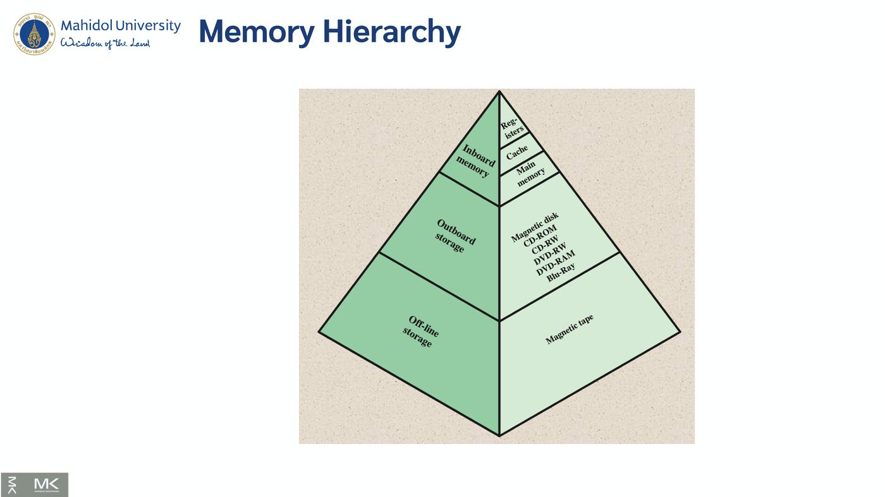
| กลุ่ม | ประกอบด้วย |
|---|---|
| Inboard memory (บนสุด เร็ว แพง เล็ก) | Registers, Cache, Main memory |
| Outboard storage | Magnetic disk, CD-ROM, CD-RW, DVD-RW, DVD-RAM, Blu-Ray |
| Off-line storage (ล่างสุด ช้า ถูก ใหญ่) | Magnetic tape |
ลงล่าง: ราคาต่อบิตลดลง, ความจุเพิ่มขึ้น, เวลาเข้าถึงนานขึ้น, CPU เข้าถึงน้อยลง (ลักษณะเสริมตามตำรา Stallings)
Cache and Main Memory
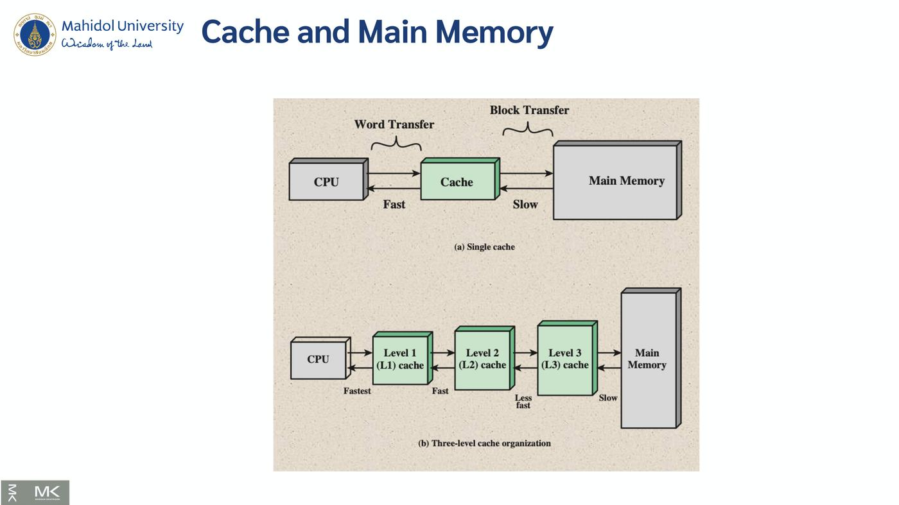
- (a) Single cache: CPU ⇄ Cache (Word Transfer, Fast) ⇄ Main Memory (Block Transfer, Slow)
- (b) Three-level cache organization: CPU ⇄ L1 (Fastest) ⇄ L2 (Fast) ⇄ L3 (Less fast) ⇄ Main Memory (Slow)
Memory Hierarchy Levels ⭐
- Block (aka line): หน่วยของการคัดลอก (อาจมีหลาย word)
- ถ้าข้อมูลที่ต้องการ อยู่ในระดับบน:
- Hit: ระดับบนตอบได้
- Hit ratio = hits / accesses
- ถ้า ไม่อยู่:
- Miss: คัดลอก block จากระดับล่างขึ้นมา
- Miss penalty: เวลาที่ใช้
- Miss ratio = misses / accesses = 1 − hit ratio
- แล้วจึงส่งข้อมูลจากระดับบน
3. Memory Technology
3.1 เปรียบเทียบเทคโนโลยี ⭐
| เทคโนโลยี | Access time | ราคา $/GB |
|---|---|---|
| Static RAM (SRAM) | 0.5ns – 2.5ns | $2000 – $5000 |
| Dynamic RAM (DRAM) | 50ns – 70ns | $20 – $75 |
| Magnetic disk | 5ms – 20ms | $0.20 – $2 |
Ideal memory = access time ของ SRAM + ความจุและ $/GB ของ disk (ทำไม่ได้จริง จึงใช้ hierarchy)
3.2 DRAM Technology
- เก็บข้อมูลเป็นประจุใน capacitor
- ใช้ transistor ตัวเดียว เข้าถึงประจุ
- ต้อง refresh เป็นระยะ (ประจุรั่ว)
- อ่านค่าแล้วเขียนกลับ
- ทำทีละ "row" ของ DRAM
💡 SRAM ไม่ต้อง refresh (ใช้ flip-flop หลาย transistor) จึงเร็วแต่แพงและเล็ก ใช้ทำ cache / DRAM ถูกและจุเยอะ ใช้ทำ main memory (คำอธิบายเสริม)
3.3 Advanced DRAM Organization
- บิตใน DRAM จัดเป็น array สี่เหลี่ยม
- DRAM เข้าถึงทั้ง row
- Burst mode: ส่ง word ถัด ๆ ไปใน row เดียวกันโดย latency ลดลง
- DDR (Double data rate) DRAM: ส่งข้อมูลทั้ง ขอบขาขึ้นและขาลงของ clock
- QDR (Quad data rate) DRAM: แยก input และ output ของ DDR
3.4 DRAM Generations
| Year | Capacity | $/GB |
|---|---|---|
| 1980 | 64Kbit | $1,500,000 |
| 1983 | 256Kbit | $500,000 |
| 1985 | 1Mbit | $200,000 |
| 1989 | 4Mbit | $50,000 |
| 1992 | 16Mbit | $15,000 |
| 1996 | 64Mbit | $10,000 |
| 1998 | 128Mbit | $4,000 |
| 2000 | 256Mbit | $1,000 |
| 2004 | 512Mbit | $250 |
| 2007 | 1Gbit | $50 |
- กราฟแสดง Trac (row access time) และ Tcac (column access time) ลดลงตามปีแต่ช้ากว่าความจุที่เพิ่ม
3.5 DRAM Performance Factors
- Row buffer: อ่านและ refresh หลาย word พร้อมกัน
- Synchronous DRAM: เข้าถึงต่อเนื่องแบบ burst โดย ไม่ต้องส่ง address ทุกครั้ง → เพิ่ม bandwidth
- DRAM banking: เข้าถึง หลาย DRAM พร้อมกัน → เพิ่ม bandwidth
3.6 Increasing Memory Bandwidth
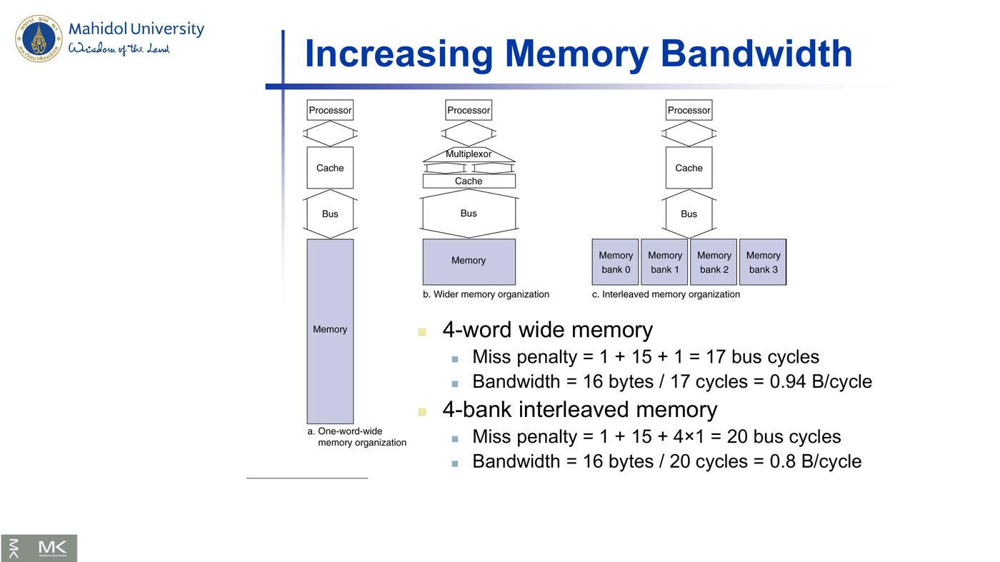
| แบบ | Miss penalty | Bandwidth |
|---|---|---|
| 4-word wide memory | 1 + 15 + 1 = 17 bus cycles | 16 bytes / 17 cycles = 0.94 B/cycle |
| 4-bank interleaved memory | 1 + 15 + 4×1 = 20 bus cycles | 16 bytes / 20 cycles = 0.8 B/cycle |
(เทียบกับแบบ 1-word-wide ในหัวข้อ 8.2 ที่ได้ 0.25 B/cycle)
3.7 Flash Storage
- Nonvolatile semiconductor storage (ไฟดับข้อมูลไม่หาย)
- เร็วกว่า disk 100× – 1000×
- เล็กกว่า ใช้ไฟน้อยกว่า ทนกว่า
- แต่ $/GB แพงกว่า disk (อยู่ระหว่าง disk กับ DRAM)
3.8 Flash Types
| NOR flash | NAND flash | |
|---|---|---|
| bit cell | คล้าย NOR gate | คล้าย NAND gate |
| การเข้าถึง | Random read/write | ทีละ block แต่ หนาแน่นกว่า (bits/area) |
| ราคา | ถูกกว่าต่อ GB | |
| ใช้ทำ | instruction memory ใน embedded systems | USB keys, media storage, … |
- ⚠️ Flash bits สึกหลังเขียนหลายพันครั้ง
- ไม่เหมาะใช้แทน RAM หรือ disk ตรง ๆ
- Wear leveling: ย้ายข้อมูลไปยัง block ที่ใช้น้อย
3.9 Disk Storage
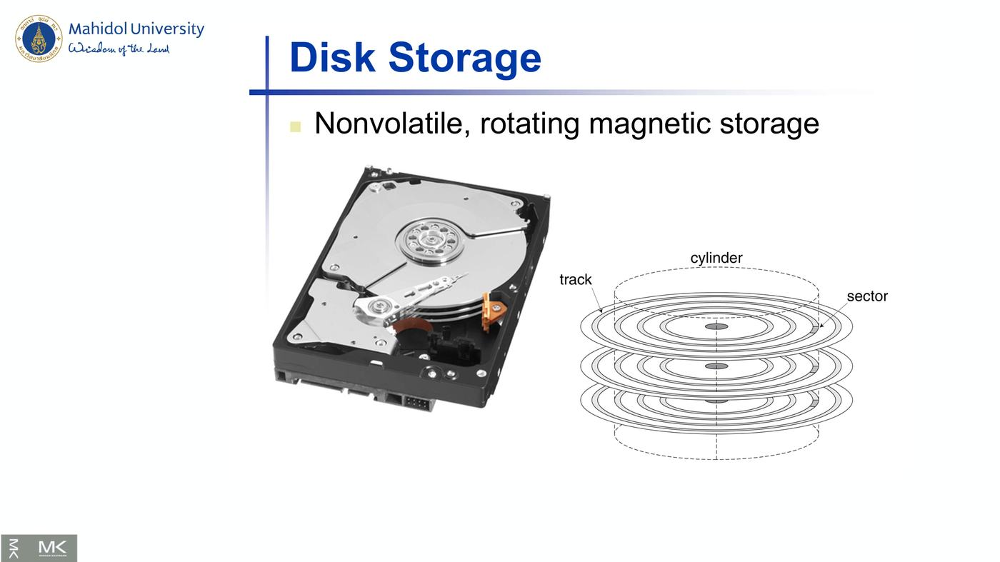
- Nonvolatile, rotating magnetic storage
- โครงสร้าง: track (วงรอบบนแผ่น), sector (ส่วนย่อยของ track), cylinder (track ตำแหน่งเดียวกันทุกแผ่น)
3.10 Disk Sectors and Access
แต่ละ sector บันทึก:
- Sector ID
- Data (512 bytes, เสนอ 4096 bytes)
- Error correcting code (ECC) — ซ่อน defect และ recording errors
- Synchronization fields and gaps
การเข้าถึง sector ประกอบด้วย:
- Queuing delay ถ้ามีคำขออื่นรอ
- Seek: เลื่อนหัวอ่าน
- Rotational latency: รอแผ่นหมุนมาถึง
- Data transfer
- Controller overhead
3.11 Disk Access Example ⭐
Given: 512B sector, 15,000rpm, 4ms average seek time, 100MB/s transfer rate, 0.2ms controller overhead, idle disk
| ส่วน | คำนวณ | เวลา |
|---|---|---|
| Seek | 4ms | |
| Rotational latency | ½ / (15,000/60) = ½ รอบ ÷ 250 รอบ/วินาที | 2ms |
| Transfer | 512 / 100MB/s | 0.005ms |
| Controller | 0.2ms | |
| Average read time | 6.2ms |
- ถ้า actual average seek time = 1ms → average read time = 3.2ms
💡 rotational latency เฉลี่ย = ครึ่งรอบ เพราะเฉลี่ยแล้วต้องรอหมุนครึ่งทาง
3.12 Disk Performance Issues
- ผู้ผลิตบอก average seek time จาก seek ทุกแบบที่เป็นไปได้
- Locality และ OS scheduling ทำให้ seek จริงน้อยกว่า
- Smart disk controller จัดวาง physical sectors บน disk
- แสดง logical sector interface ให้ host (SCSI, ATA, SATA)
- Disk drive มี cache
- Prefetch sectors ล่วงหน้า
- หลีกเลี่ยง seek และ rotational delay
4. Cache Memory Basics
4.1 Cache Memory
- ระดับของ memory hierarchy ที่ใกล้ CPU ที่สุด
- ให้ลำดับการเข้าถึง X₁, …, Xₙ₋₁, Xₙ (ก่อนอ้าง Xₙ มันยังไม่อยู่ใน cache)
- คำถามหลัก:
- รู้ได้อย่างไรว่าข้อมูลอยู่ใน cache?
- ต้องหาที่ไหน?
4.2 Elements of Cache Design
| องค์ประกอบ | ตัวเลือก |
|---|---|
| Cache Addresses | Logical, Physical |
| Cache Size | |
| Mapping Function | Direct, Associative, Set Associative |
| Replacement Algorithm | Least recently used (LRU), First in first out (FIFO), Least frequently used (LFU), Random |
| Write Policy | Write through, Write back |
| Line Size | (ขนาด block) |
| Number of caches | Single or two level, Unified or split |
5. Direct Mapped Cache ⭐⭐
5.1 หลักการ
- ตำแหน่งกำหนดโดย address
- Direct mapped: มีที่เดียวให้วาง
- (Block address) modulo (#Blocks in cache)
- #Blocks เป็นกำลังของ 2 → ใช้บิตล่างของ address เป็น index ได้เลย
💡 เหมือนตู้ล็อกเกอร์ 8 ช่องที่กำหนดตามเลข 3 ตัวท้ายของรหัสนักศึกษา แต่ละคนมีช่องได้ช่องเดียว
5.2 Tags and Valid Bits
- รู้ได้อย่างไรว่า block ไหนอยู่ในช่องนั้น?
- เก็บ block address ไว้ด้วย (จริง ๆ เก็บแค่ บิตบน) เรียกว่า tag
- ถ้าช่องนั้นยังไม่มีข้อมูล?
- Valid bit: 1 = มี, 0 = ไม่มี (เริ่มต้นเป็น 0)
5.3 Cache Example ⭐
8 blocks, 1 word/block, direct mapped → address 5 บิต = tag 2 บิต + index 3 บิต
ลำดับการเข้าถึง:
| Word addr | Binary (tag index) | Hit/miss | Cache block |
|---|---|---|---|
| 22 | 10 110 | Miss | 110 |
| 26 | 11 010 | Miss | 010 |
| 22 | 10 110 | Hit | 110 |
| 26 | 11 010 | Hit | 010 |
| 16 | 10 000 | Miss | 000 |
| 3 | 00 011 | Miss | 011 |
| 16 | 10 000 | Hit | 000 |
| 18 | 10 010 | Miss | 010 |
สถานะ cache สุดท้าย:
| Index | V | Tag | Data |
|---|---|---|---|
| 000 | Y | 10 | Mem[10000] |
| 001 | N | ||
| 010 | Y | 10 | Mem[10010] ← ถูกแทนที่ (เดิม tag 11 = Mem[11010]) |
| 011 | Y | 00 | Mem[00011] |
| 100 | N | ||
| 101 | N | ||
| 110 | Y | 10 | Mem[10110] |
| 111 | N |
⚠️ ขั้นสุดท้าย: 18 (10 010) ตก index 010 เดียวกับ 26 (11 010) แต่ tag ไม่ตรง → miss และ แทนที่ ของเดิม นี่คือจุดอ่อนของ direct mapped (conflict)
6. Address Subdivision และ Block Size
6.1 Address Subdivision
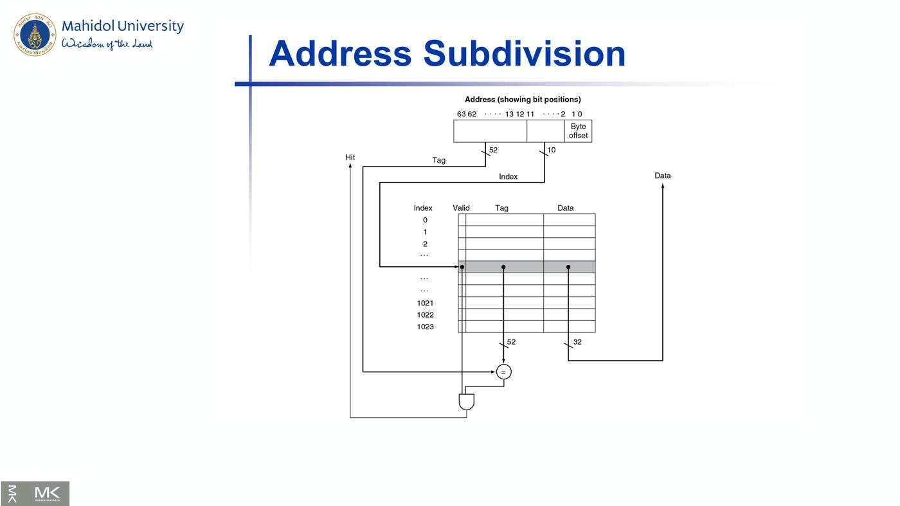
- address 64 บิต แบ่งเป็น Tag (52 บิต) | Index (10 บิต) | Byte offset (2 บิต)
- cache มี 1024 entries (index 0–1023) แต่ละ entry: Valid, Tag, Data (32 บิต)
- Hit = Valid AND (Tag ใน cache == Tag ของ address)
6.2 Example: Larger Block Size ⭐
64 blocks, 16 bytes/block — address 1200 อยู่ block ไหน?
$$\text{Block address} = \left\lfloor \frac{\text{address}}{\text{bytes/block}} \right\rfloor = \lfloor 1200/16 \rfloor = 75$$
$$\text{Block number} = \text{Block address} \bmod #\text{blocks} = 75 \bmod 64 = 11$$
| Tag | Index | Offset |
|---|---|---|
| บิต 31–10 (22 บิต, address 32 บิต) | บิต 9–4 (6 บิต, 64 blocks) | บิต 3–0 (4 บิต, 16 bytes) |
💡 สูตรหาจำนวนบิต: offset = log₂(bytes/block), index = log₂(#blocks), tag = บิตที่เหลือ
6.3 Block Size Considerations
- Block ใหญ่ควรลด miss rate เพราะ spatial locality
- แต่ใน cache ขนาดคงที่:
- Block ใหญ่ → จำนวน block น้อยลง → แย่งกันมากขึ้น → miss rate เพิ่ม
- Block ใหญ่ → pollution (ดึงข้อมูลที่ไม่ได้ใช้มาเต็มที่)
- Miss penalty สูงขึ้น → อาจกลบประโยชน์จาก miss rate ที่ลดลง
- Early restart และ critical-word-first ช่วยได้
7. Cache Misses และ Write Policy
7.1 Cache Misses
- Hit: CPU ทำงานต่อปกติ
- Miss:
- หยุด (stall) CPU pipeline
- ดึง block จากระดับถัดไป ของ hierarchy
- Instruction cache miss: เริ่ม fetch คำสั่งใหม่
- Data cache miss: ทำ data access ให้เสร็จ
7.2 Write-Through ⭐
- ตอน data-write hit ถ้าแก้แค่ block ใน cache → cache กับ memory ไม่ตรงกัน (inconsistent)
- Write through: แก้ memory ด้วย
- แต่ เขียนช้าลง
- ตัวอย่าง: base CPI = 1, 10% ของคำสั่งเป็น store, เขียน memory ใช้ 100 cycles
- Effective CPI = 1 + 0.1 × 100 = 11
- ทางแก้: write buffer
- เก็บข้อมูลที่ รอเขียนลง memory
- CPU ทำงานต่อได้ทันที
- stall เฉพาะเมื่อ write buffer เต็ม
7.3 Write-Back
- ทางเลือก: ตอน data-write hit แก้แค่ block ใน cache
- ติดตามว่า block ไหน "dirty" (ถูกแก้แล้ว)
- เมื่อ dirty block ถูกแทนที่ → เขียนกลับลง memory
- ใช้ write buffer ให้อ่าน block ใหม่ก่อนได้
7.4 Write Allocation
ถ้า write miss จะทำอย่างไร?
- สำหรับ write-through:
- Allocate on miss: ดึง block มา
- Write around: ไม่ดึง block (เพราะโปรแกรมมักเขียนทั้ง block ก่อนอ่าน เช่น initialization)
- สำหรับ write-back: มักดึง block มา
| Write-through | Write-back | |
|---|---|---|
| แก้อะไร | cache และ memory | cache อย่างเดียว แล้วเขียนตอนแทนที่ |
| ข้อดี | ข้อมูลตรงกันเสมอ, replacement ง่าย | เขียนเร็ว |
| ข้อเสีย | เขียนช้า (ต้อง write buffer) | ต้องเก็บ state เพิ่ม (dirty bit) |
8. Intrinsity FastMATH และ Main Memory Supporting Caches
8.1 Example: Intrinsity FastMATH
- Embedded MIPS processor
- 12-stage pipeline
- เข้าถึง instruction และ data ทุก cycle
- Split cache: แยก I-cache และ D-cache
- แต่ละตัว 16KB: 256 blocks × 16 words/block
- D-cache: write-through หรือ write-back
- SPEC2000 miss rates:
- I-cache: 0.4%
- D-cache: 11.4%
- Weighted average: 3.2%
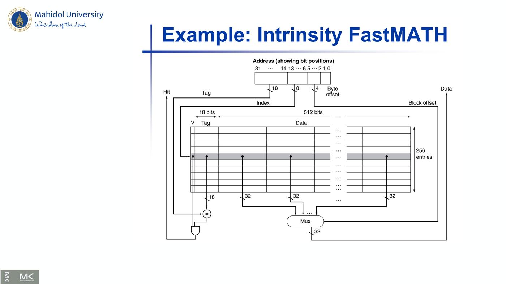
- address 32 บิต: Tag 18 | Index 8 | Block offset 4 | Byte offset 2
- cache 256 entries, data 512 บิต (16 words × 32) → Mux เลือก word ด้วย block offset
8.2 Main Memory Supporting Caches ⭐
- ใช้ DRAMs เป็น main memory
- ความกว้างคงที่ (เช่น 1 word)
- เชื่อมด้วย bus แบบ clocked ความกว้างคงที่
- bus clock มักช้ากว่า CPU clock
- ตัวอย่างอ่าน cache block:
- 1 bus cycle สำหรับส่ง address
- 15 bus cycles ต่อการเข้าถึง DRAM
- 1 bus cycle ต่อการส่งข้อมูล
- 4-word block, 1-word-wide DRAM:
- Miss penalty = 1 + 4×15 + 4×1 = 65 bus cycles
- Bandwidth = 16 bytes / 65 cycles = 0.25 B/cycle
9. Measuring Cache Performance ⭐⭐
9.1 Components of CPU Time
- Program execution cycles (รวม cache hit time)
- Memory stall cycles (ส่วนใหญ่จาก cache misses)
สูตร (แบบง่าย):
$$\text{Memory stall cycles} = \frac{\text{Memory accesses}}{\text{Program}} \times \text{Miss rate} \times \text{Miss penalty}$$
$$= \frac{\text{Instructions}}{\text{Program}} \times \frac{\text{Misses}}{\text{Instruction}} \times \text{Miss penalty}$$
9.2 Cache Performance Example ⭐
Given:
- I-cache miss rate = 2%
- D-cache miss rate = 4%
- Miss penalty = 100 cycles
- Base CPI (ideal cache) = 2
- Load & stores = 36% ของคำสั่ง
Miss cycles per instruction:
- I-cache: 0.02 × 100 = 2 (ทุกคำสั่งต้อง fetch)
- D-cache: 0.36 × 0.04 × 100 = 1.44 (เฉพาะ load/store)
Actual CPI = 2 + 2 + 1.44 = 5.44 Ideal CPU เร็วกว่า 5.44 / 2 = 2.72 เท่า
⚠️ D-cache ต้องคูณ 0.36 เพราะเฉพาะ load/store ที่เข้าถึงข้อมูล แต่ I-cache ใช้ทุกคำสั่ง
9.3 Average Memory Access Time (AMAT) ⭐
- Hit time ก็สำคัญต่อประสิทธิภาพ
$$\text{AMAT} = \text{Hit time} + \text{Miss rate} \times \text{Miss penalty}$$
ตัวอย่าง: CPU clock 1ns, hit time = 1 cycle, miss penalty = 20 cycles, I-cache miss rate = 5%
- AMAT = 1 + 0.05 × 20 = 2ns → 2 cycles ต่อคำสั่ง
9.4 Performance Summary
- เมื่อ CPU เร็วขึ้น miss penalty ยิ่งสำคัญ
- ลด base CPI → สัดส่วนเวลาที่เสียกับ memory stall สูงขึ้น
- เพิ่ม clock rate → memory stall กิน CPU cycles มากขึ้น
- ละเลยพฤติกรรม cache ไม่ได้ ตอนประเมินประสิทธิภาพระบบ
10. Associative Caches ⭐⭐
10.1 ชนิด
| Fully associative | n-way set associative | |
|---|---|---|
| วางได้ที่ไหน | block ไป entry ไหนก็ได้ | แต่ละ set มี n entries; block number กำหนด set |
| หา set | – | (Block number) modulo (#Sets in cache) |
| ค้นหา | ค้นทุก entry พร้อมกัน | ค้นทุก entry ใน set นั้นพร้อมกัน |
| comparator | ต่อ entry (แพง) | n ตัว (ถูกกว่า) |
10.2 Associative Cache Example
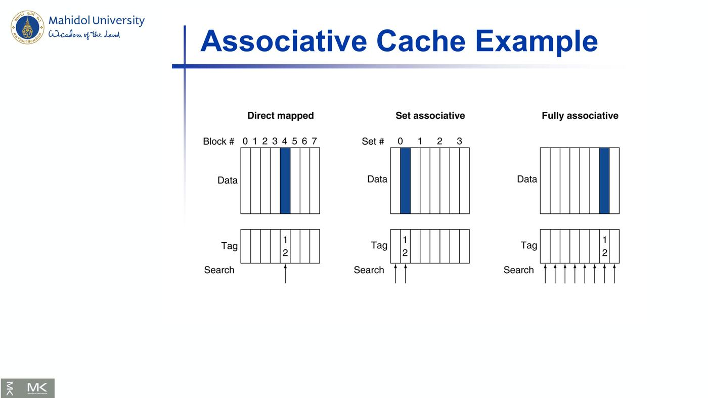
ค้นหา block address 12 ใน cache 8 ช่อง:
- Direct mapped: 12 mod 8 = block 4 → ค้น 1 ที่
- Set associative (2-way, 4 sets): 12 mod 4 = set 0 → ค้น 2 ที่
- Fully associative: ค้น ทั้ง 8 ที่
10.3 Spectrum of Associativity (cache 8 entries)
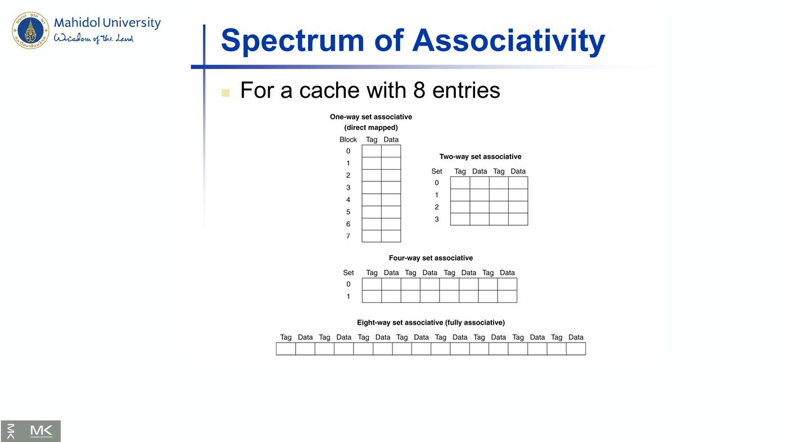
| แบบ | จำนวน set × entries ต่อ set |
|---|---|
| One-way set associative (direct mapped) | 8 sets × 1 |
| Two-way set associative | 4 sets × 2 |
| Four-way set associative | 2 sets × 4 |
| Eight-way set associative (fully associative) | 1 set × 8 |
10.4 Associativity Example ⭐
เทียบ cache 4 blocks: direct mapped, 2-way set associative, fully associative ลำดับ block address: 0, 8, 0, 6, 8
Direct mapped (index = address mod 4)
| Block addr | Index | Hit/miss | Cache content after access (0, 1, 2, 3) |
|---|---|---|---|
| 0 | 0 | miss | Mem[0], –, –, – |
| 8 | 0 | miss | Mem[8], –, –, – |
| 0 | 0 | miss | Mem[0], –, –, – |
| 6 | 2 | miss | Mem[0], –, Mem[6], – |
| 8 | 0 | miss | Mem[8], –, Mem[6], – |
→ 5 misses
2-way set associative (set = address mod 2)
| Block addr | Set | Hit/miss | Set 0 | Set 1 |
|---|---|---|---|---|
| 0 | 0 | miss | Mem[0] | |
| 8 | 0 | miss | Mem[0], Mem[8] | |
| 0 | 0 | hit | Mem[0], Mem[8] | |
| 6 | 0 | miss | Mem[0], Mem[6] (แทน 8 เพราะ LRU) | |
| 8 | 0 | miss | Mem[8], Mem[6] (แทน 0) |
→ 4 misses
Fully associative
| Block addr | Hit/miss | Cache content |
|---|---|---|
| 0 | miss | Mem[0] |
| 8 | miss | Mem[0], Mem[8] |
| 0 | hit | Mem[0], Mem[8] |
| 6 | miss | Mem[0], Mem[8], Mem[6] |
| 8 | hit | Mem[0], Mem[8], Mem[6] |
→ 3 misses
💡 associativity สูงขึ้น → miss น้อยลง (5 → 4 → 3)
10.5 How Much Associativity
- Associativity สูงขึ้นลด miss rate แต่ ได้ผลน้อยลงเรื่อย ๆ (diminishing returns)
- Simulation: 64KB D-cache, 16-word blocks, SPEC2000
| Associativity | Miss rate |
|---|---|
| 1-way | 10.3% |
| 2-way | 8.6% |
| 4-way | 8.3% |
| 8-way | 8.1% |
10.6 Set Associative Cache Organization
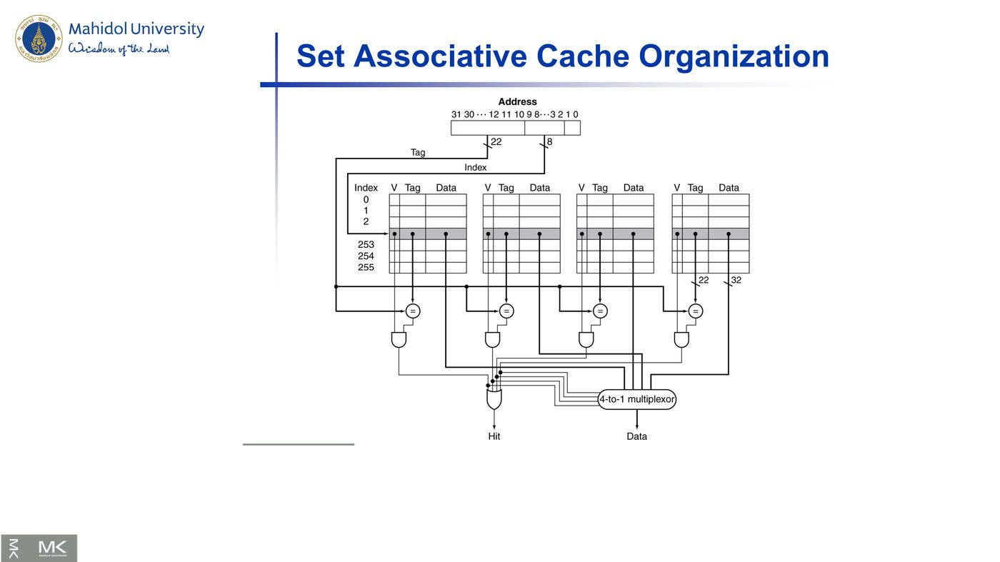
- address 32 บิต: Tag 22 | Index 8 (256 sets)
- 4 ways แต่ละ way มี V, Tag, Data
- เปรียบเทียบ tag 4 ตัวพร้อมกัน → OR เป็น Hit → 4-to-1 multiplexor เลือก Data
11. Replacement Policy และ Multilevel Caches
11.1 Replacement Policy
- Direct mapped: ไม่มีทางเลือก
- Set associative:
- เลือก entry ที่ไม่ valid ก่อน (ถ้ามี)
- ไม่งั้นเลือกใน set:
- Least-recently used (LRU): เลือกตัวที่ ไม่ได้ใช้นานที่สุด — ง่ายกับ 2-way, พอจัดการได้กับ 4-way, ยากเกินไปถ้ามากกว่านั้น
- Random: ให้ประสิทธิภาพ ใกล้เคียง LRU เมื่อ associativity สูง
11.2 Multilevel Caches
- Primary cache (L1) ติด CPU: เล็กแต่เร็ว
- Level-2 cache รับ miss จาก primary: ใหญ่กว่า ช้ากว่า แต่ยังเร็วกว่า main memory
- Main memory รับ miss จาก L-2
- ระบบระดับสูงบางตัวมี L-3 cache
11.3 Multilevel Cache Example ⭐⭐
Given:
- CPU base CPI = 1, clock rate = 4GHz (cycle = 0.25ns)
- Miss rate/instruction = 2%
- Main memory access time = 100ns
มีแค่ primary cache:
- Miss penalty = 100ns / 0.25ns = 400 cycles
- Effective CPI = 1 + 0.02 × 400 = 9
เพิ่ม L-2 cache:
- Access time = 5ns
- Global miss rate to main memory = 0.5%
- Primary miss แต่ L-2 hit: penalty = 5ns / 0.25ns = 20 cycles
- Primary miss และ L-2 miss: extra penalty = 500 cycles (ตามสไลด์)
- ⚠️ แต่สูตรในสไลด์ใช้ 400 (เวลาไป main memory) ถ้าคิดแบบ 500 จะได้ CPI = 3.9 — ตอบตามที่อาจารย์ใช้คือ 3.4
- CPI = 1 + 0.02 × 20 + 0.005 × 400 = 3.4
- Performance ratio = 9 / 3.4 = 2.6
💡 การเพิ่ม L2 เล็ก ๆ ทำให้เร็วขึ้น 2.6 เท่า เพราะ miss ส่วนใหญ่ไม่ต้องไปถึง main memory ที่ช้ามาก
11.4 Multilevel Cache Considerations
- Primary cache: เน้น hit time น้อยที่สุด
- L-2 cache: เน้น miss rate ต่ำ เพื่อเลี่ยงการเข้าถึง main memory; hit time มีผลโดยรวมน้อยกว่า
- ผลลัพธ์:
- L-1 มักเล็กกว่า cache แบบชั้นเดียว
- L-1 block size เล็กกว่า L-2 block size
12. Interactions with Advanced CPUs และ Software
12.1 Interactions with Advanced CPUs
- Out-of-order CPUs รันคำสั่งอื่นได้ระหว่าง cache miss
- store ที่ค้างอยู่ อยู่ใน load/store unit
- คำสั่งที่พึ่งพา รอใน reservation stations
- คำสั่งอิสระ ทำต่อได้
- ผลของ miss ขึ้นกับ data flow ของโปรแกรม
- วิเคราะห์ยากมาก → ใช้ system simulation
12.2 Interactions with Software
- Miss ขึ้นกับรูปแบบการเข้าถึง memory:
- พฤติกรรมของ algorithm
- Compiler optimization สำหรับ memory access
12.3 Software Optimization via Blocking ⭐
- เป้าหมาย: ใช้ข้อมูลให้ได้มากที่สุดก่อนมันถูกแทนที่ออกจาก cache
- Inner loops ของ DGEMM (double-precision general matrix multiply):
for (int j = 0; j < n; ++j) {
double cij = C[i+j*n];
for( int k = 0; k < n; k++ )
cij += A[i+k*n] * B[k+j*n];
C[i+j*n] = cij;
}
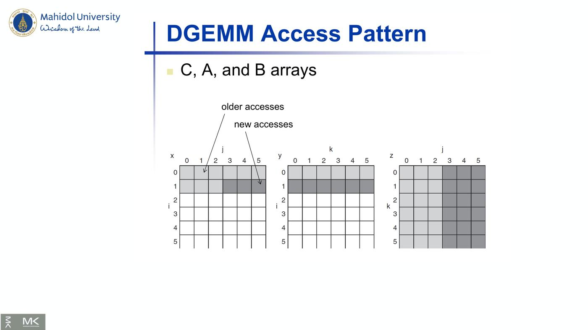
- ภาพ: แสดงการเข้าถึง C, A, B — สีเข้ม = new accesses, สีอ่อน = older accesses — B ถูกเข้าถึงไล่ทั้ง column ยาว ๆ ทำให้ข้อมูลเก่าหลุดจาก cache
12.4 Cache Blocked DGEMM
#define BLOCKSIZE 32
void do_block (int n, int si, int sj, int sk, double *A, double *B, double *C) {
for (int i = si; i < si+BLOCKSIZE; ++i)
for (int j = sj; j < sj+BLOCKSIZE; ++j) {
double cij = C[i+j*n]; /* cij = C[i][j] */
for( int k = sk; k < sk+BLOCKSIZE; k++ )
cij += A[i+k*n] * B[k+j*n]; /* cij+=A[i][k]*B[k][j] */
C[i+j*n] = cij; /* C[i][j] = cij */
}
}
void dgemm (int n, double* A, double* B, double* C) {
for ( int sj = 0; sj < n; sj += BLOCKSIZE )
for ( int si = 0; si < n; si += BLOCKSIZE )
for ( int sk = 0; sk < n; sk += BLOCKSIZE )
do_block(n, si, sj, sk, A, B, C);
}
- แบ่ง matrix เป็น ก้อนย่อย 32×32 ที่ใส่ใน cache ได้พอดี แล้วคูณทีละก้อน
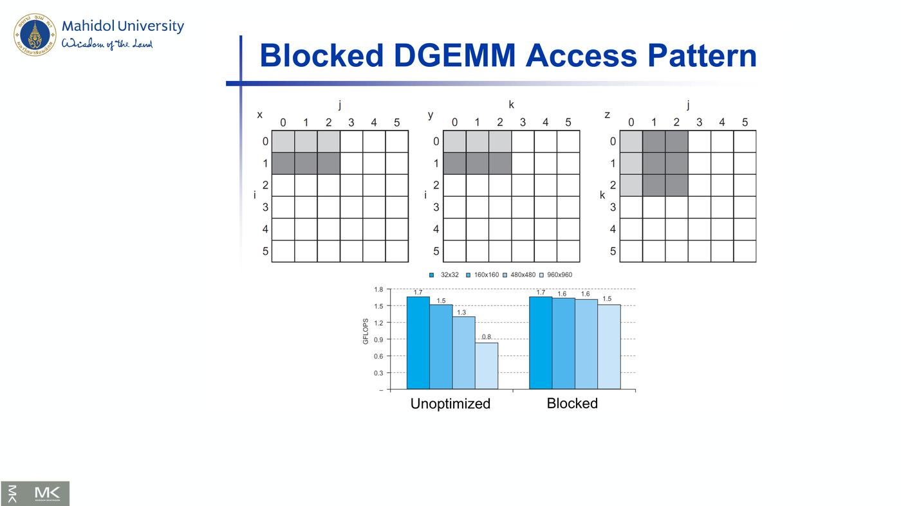
ผลในกราฟ (GFLOPS = ยิ่งสูงยิ่งเร็ว)
| ขนาด matrix | Unoptimized | Blocked |
|---|---|---|
| 32×32 | 1.7 | 1.7 |
| 160×160 | 1.5 | 1.6 |
| 480×480 | 1.3 | 1.6 |
| 960×960 | 0.8 | 1.5 |
💡 matrix ใหญ่ขึ้น แบบ unoptimized ช้าลงมาก (cache miss เยอะ) แต่แบบ blocked แทบคงที่
13. Dependability
13.1 Dependability
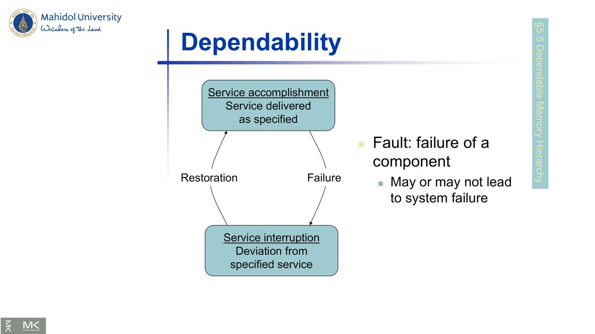
- Service accomplishment: ให้บริการตามที่ระบุ
- Service interruption: เบี่ยงเบนจากบริการที่ระบุ
- Failure ทำให้ accomplishment → interruption / Restoration ทำให้กลับมา
- Fault: ความเสียหายของส่วนประกอบ — อาจหรือไม่อาจทำให้ระบบ failure
13.2 Dependability Measures ⭐
- Reliability: mean time to failure (MTTF)
- Service interruption: mean time to repair (MTTR)
- Mean time between failures: MTBF = MTTF + MTTR
- Availability = MTTF / (MTTF + MTTR)
- ปรับปรุง availability:
- เพิ่ม MTTF: fault avoidance, fault tolerance, fault forecasting
- ลด MTTR: เครื่องมือและกระบวนการวินิจฉัยและซ่อมที่ดีขึ้น
💡 ตัวอย่าง: MTTF = 999 ชม., MTTR = 1 ชม. → availability = 999/1000 = 99.9% (เสริม)
13.3 The Hamming SEC Code
- Hamming distance: จำนวนบิตที่ต่างกัน ระหว่างบิตสองชุด
- Minimum distance = 2 → ตรวจจับ single bit error (เช่น parity code)
- Minimum distance = 3 → แก้ single error ได้, ตรวจจับ 2 bit error
13.4 Encoding SEC ⭐
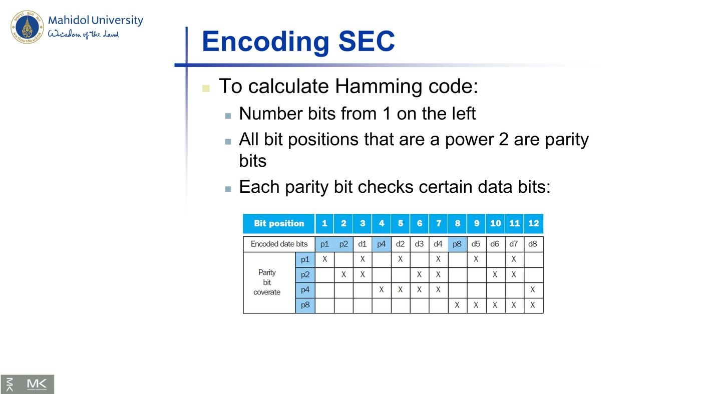
- นับตำแหน่งบิตเริ่มที่ 1 จากซ้าย
- ตำแหน่งที่เป็นกำลังของ 2 เป็น parity bits (1, 2, 4, 8)
- แต่ละ parity bit ตรวจ data bits บางตัว:
| Bit position | 1 | 2 | 3 | 4 | 5 | 6 | 7 | 8 | 9 | 10 | 11 | 12 |
|---|---|---|---|---|---|---|---|---|---|---|---|---|
| Encoded data bits | p1 | p2 | d1 | p4 | d2 | d3 | d4 | p8 | d5 | d6 | d7 | d8 |
| p1 | X | X | X | X | X | X | ||||||
| p2 | X | X | X | X | X | X | ||||||
| p4 | X | X | X | X | X | |||||||
| p8 | X | X | X | X | X |
💡 p_k ตรวจตำแหน่งที่มีบิต k เป็น 1 ในเลขฐานสอง เช่น p1 ตรวจตำแหน่งเลขคี่, p2 ตรวจ 2,3,6,7,10,11
13.5 Decoding SEC
- ค่า parity bits บอกว่าบิตไหนผิด (ใช้เลขตำแหน่งจากตอน encode)
- Parity bits = 0000 → ไม่มี error
- Parity bits = 1010 → บิต 10 ถูกพลิก
13.6 SEC/DED Code
- เพิ่ม parity bit อีก 1 บิตสำหรับทั้ง word (pₙ)
- ทำให้ Hamming distance = 4
- Decoding (H = SEC parity bits):
| H | pₙ | ความหมาย |
|---|---|---|
| even | even | ไม่มี error |
| odd | odd | single bit error ที่แก้ได้ |
| even | odd | error ที่บิต pₙ |
| odd | even | double error |
- ECC DRAM ใช้ SEC/DED กับ 8 บิต ป้องกันทุก 64 บิต
14. Virtual Machines
14.1 Virtual Machines
- Host computer จำลอง guest OS และทรัพยากรเครื่อง
- แยก guest หลายตัวออกจากกันได้ดีขึ้น
- หลีกเลี่ยงปัญหาความปลอดภัยและความน่าเชื่อถือ
- ช่วยแบ่งปันทรัพยากร
- Virtualization มีผลต่อประสิทธิภาพบ้าง แต่ทำได้บนคอมพิวเตอร์สมรรถนะสูงปัจจุบัน
- ตัวอย่าง: IBM VM/370 (เทคโนโลยียุค 1970!), VMWare, Microsoft Virtual PC
14.2 Virtual Machine Monitor (VMM)
- Map ทรัพยากรเสมือน → ทรัพยากรจริง: memory, I/O devices, CPUs
- โค้ดของ guest รันบนเครื่องจริงใน user mode
- trap ไป VMM เมื่อเจอ privileged instructions และการเข้าถึง protected resources
- Guest OS อาจต่างจาก host OS
- VMM จัดการ I/O จริง และ จำลอง virtual I/O ทั่วไป ให้ guest
14.3 Example: Timer Virtualization
- เครื่องปกติ: เมื่อ timer interrupt → OS หยุด process ปัจจุบัน, จัดการ interrupt, เลือกและรัน process ถัดไป
- มี VMM: → VMM หยุด VM ปัจจุบัน, จัดการ interrupt, เลือกและรัน VM ถัดไป
- ถ้า VM ต้องการ timer interrupt:
- VMM จำลอง virtual timer
- จำลอง interrupt ให้ VM เมื่อ physical timer interrupt เกิด
14.4 Instruction Set Support
- User และ System modes
- Privileged instructions ใช้ได้เฉพาะใน system mode
- trap ไป system ถ้ารันใน user mode
- ทรัพยากรจริงทั้งหมดเข้าถึงได้ด้วย privileged instructions เท่านั้น (รวม page tables, interrupt controls, I/O registers)
- การฟื้นฟูการรองรับ virtualization: ISA ปัจจุบัน (เช่น x86) กำลังปรับตัว
15. Virtual Memory ⭐⭐
15.1 Virtual Memory คืออะไร
- ใช้ main memory เป็น "cache" ของ secondary storage (disk)
- จัดการร่วมกันโดย CPU hardware และ OS
- โปรแกรมแชร์ main memory
- แต่ละโปรแกรมมี virtual address space ส่วนตัว เก็บโค้ดและข้อมูลที่ใช้บ่อย
- ป้องกันจากโปรแกรมอื่น
- CPU และ OS แปล virtual address เป็น physical address
- "block" ของ VM เรียกว่า page
- "miss" ของการแปลเรียกว่า page fault
| Cache | Virtual Memory |
|---|---|
| block | page |
| miss | page fault |
15.2 Address Translation
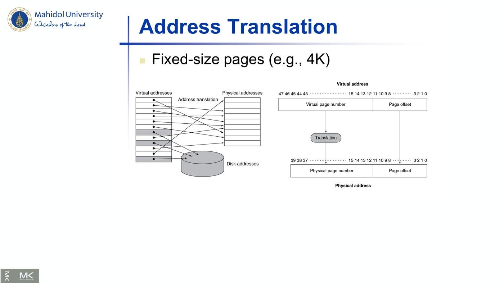
- Page ขนาดคงที่ (เช่น 4K)
- Virtual address (48 บิต) = Virtual page number | Page offset (12 บิต)
- Translation แปลง virtual page number → physical page number
- Physical address (40 บิต) = Physical page number | Page offset (offset คงเดิม)
- page บางส่วนไม่อยู่ใน memory แต่อยู่บน disk addresses
15.3 Page Fault Penalty
- เมื่อ page fault ต้อง ดึง page จาก disk
- ใช้ หลายล้าน clock cycles
- จัดการโดย OS code
- พยายามลด page fault rate:
- Fully associative placement
- Smart replacement algorithms
15.4 Page Tables
- เก็บข้อมูลการวาง (placement)
- array ของ page table entries (PTE) โดยใช้ virtual page number เป็น index
- Page table register ใน CPU ชี้ไปที่ page table ใน physical memory
- ถ้า page อยู่ใน memory:
- PTE เก็บ physical page number
- บวก status bits อื่น (referenced, dirty, …)
- ถ้าไม่อยู่: PTE ชี้ไป ตำแหน่งใน swap space บน disk
15.5 Translation Using a Page Table
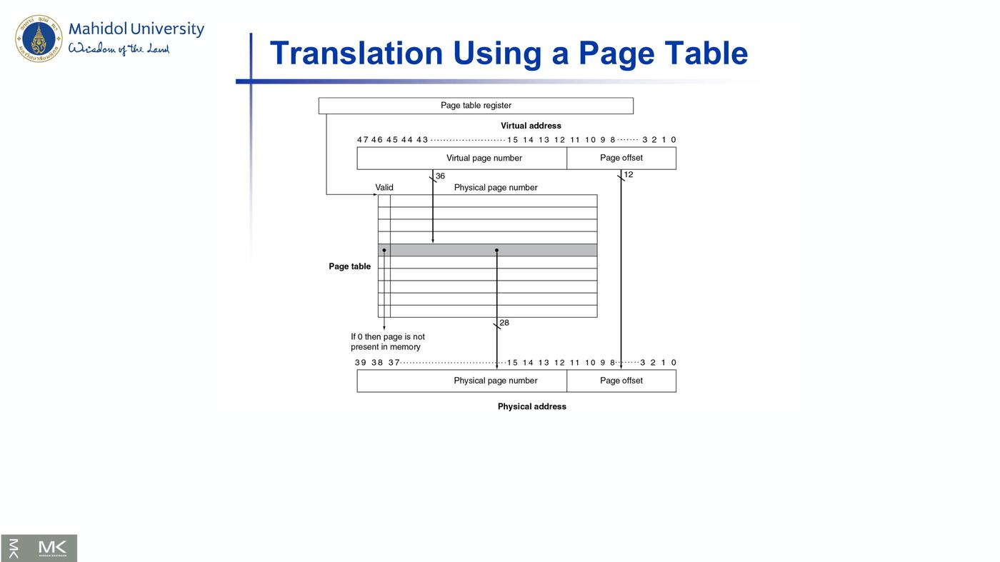
- Page table register ชี้ page table
- Virtual page number (36 บิต) เป็น index → ได้ Valid bit + Physical page number (28 บิต)
- If Valid = 0 → page ไม่อยู่ใน memory
- Physical address = Physical page number + Page offset (12 บิต)
15.6 Mapping Pages to Storage
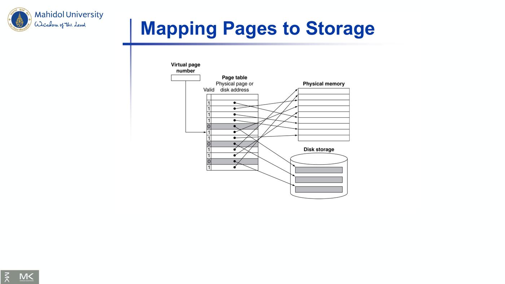
- Valid = 1 → ชี้ไปที่ physical memory
- Valid = 0 → ชี้ไปที่ disk storage
15.7 Replacement and Writes
- ลด page fault rate ด้วย LRU replacement
- Reference bit (use bit) ใน PTE ตั้งเป็น 1 เมื่อเข้าถึง page
- OS เคลียร์เป็น 0 เป็นระยะ
- page ที่ reference bit = 0 ไม่ได้ใช้เมื่อเร็ว ๆ นี้
- Disk write ใช้หลายล้าน cycles
- เขียน ทั้ง block ไม่ใช่ทีละตำแหน่ง
- Write through ทำไม่ได้จริง → ใช้ write-back
- Dirty bit ใน PTE ตั้งเมื่อ page ถูกเขียน
15.8 Fast Translation Using a TLB ⭐
- การแปล address ดูเหมือนต้องเข้าถึง memory เพิ่ม:
- ครั้งหนึ่งอ่าน PTE
- อีกครั้งเข้าถึง ข้อมูลจริง
- แต่ การเข้าถึง page table มี locality ดี
- ใช้ cache ของ PTE ใน CPU เรียกว่า Translation Look-aside Buffer (TLB)
- Typical: 16–512 PTEs, 0.5–1 cycle ตอน hit, 10–100 cycles ตอน miss, miss rate 0.01%–1%
- miss จัดการได้ทั้ง hardware หรือ software
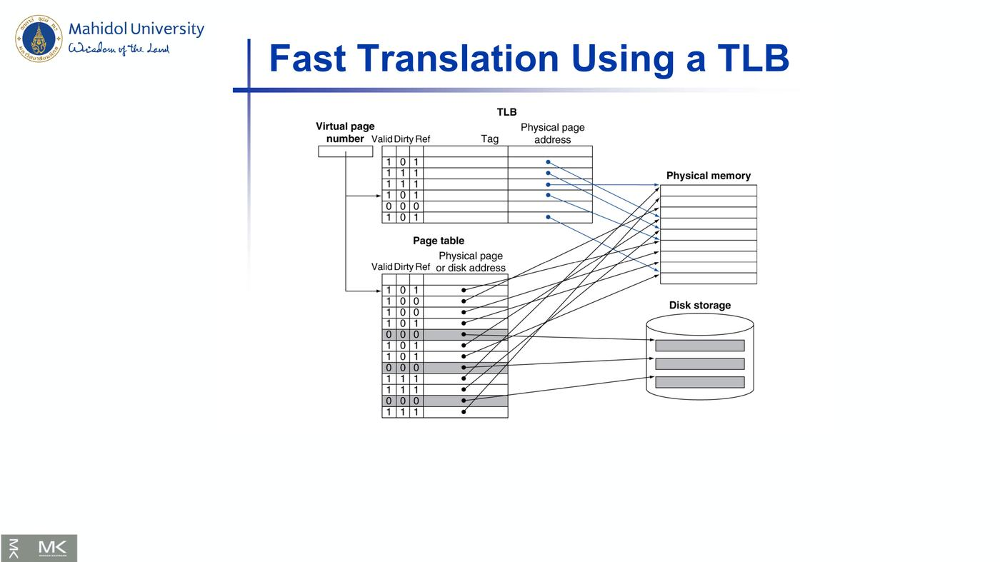
- TLB มีคอลัมน์ Valid, Dirty, Ref, Tag, Physical page address
- ถ้า TLB miss → ดู Page table (Valid, Dirty, Ref, Physical page or disk address)
💡 TLB เหมือนโพยเบอร์โทรที่แปะข้างโต๊ะ (เบอร์ที่โทรบ่อย) ไม่ต้องเปิดสมุดโทรศัพท์เล่มใหญ่ (page table) ทุกครั้ง
15.9 TLB Misses
- ถ้า page อยู่ใน memory:
- โหลด PTE จาก memory แล้วลองใหม่
- จัดการด้วย hardware ได้ (แต่ซับซ้อนกับโครงสร้าง page table ที่ซับซ้อน)
- หรือ software: raise special exception พร้อม handler ที่ optimize แล้ว
- ถ้า page ไม่อยู่ใน memory (page fault):
- OS ดึง page และอัปเดต page table
- แล้วเริ่มคำสั่งที่ fault ใหม่
15.10 TLB Miss Handler
- TLB miss บอกว่า:
- page อยู่ แต่ PTE ไม่อยู่ใน TLB หรือ
- page ไม่อยู่
- ต้องรู้ว่า TLB miss ก่อนที่ destination register จะถูกเขียนทับ
- Raise exception
- Handler คัดลอก PTE จาก memory ไป TLB → restart คำสั่ง
- ถ้า page ไม่อยู่ page fault จะเกิด
15.11 Page Fault Handler
- ใช้ virtual address ที่ fault หา PTE
- หาตำแหน่ง page บน disk
- เลือก page ที่จะแทนที่
- ถ้า dirty ให้เขียนลง disk ก่อน
- อ่าน page เข้า memory และอัปเดต page table
- ทำให้ process runnable อีกครั้ง
- เริ่มใหม่จากคำสั่งที่ fault
15.12 TLB and Cache Interaction
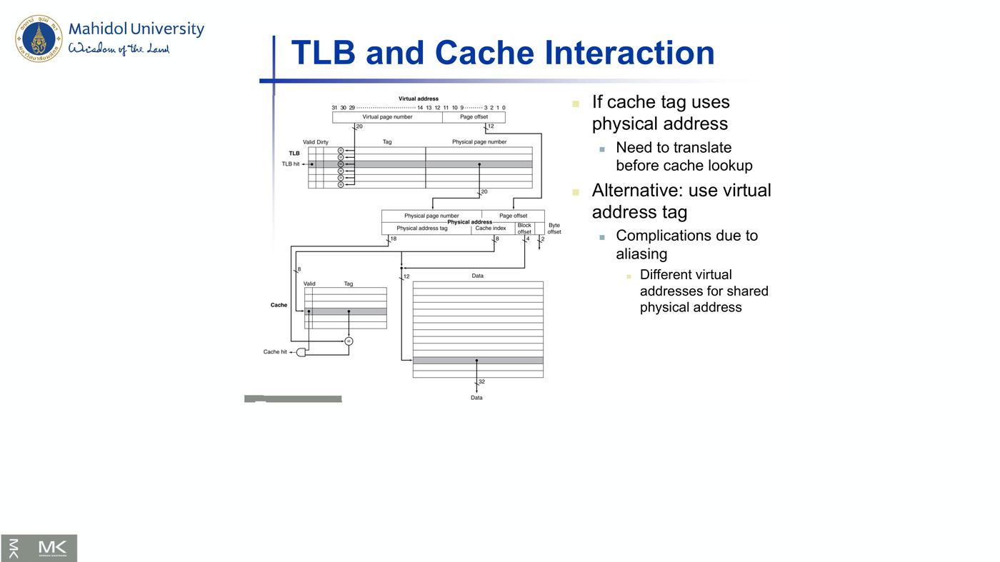
- ถ้า cache tag ใช้ physical address: ต้อง แปล address ก่อน ค้น cache
- ทางเลือก: ใช้ virtual address tag
- ซับซ้อนเพราะ aliasing: virtual address ต่างกันชี้ physical address เดียวกัน (shared)
16. Memory Protection
- task ต่าง ๆ แชร์ส่วนของ virtual address space ได้
- แต่ต้อง ป้องกันการเข้าถึงผิด
- ต้องมี OS ช่วย
- Hardware support สำหรับ OS protection:
- Privileged supervisor mode (kernel mode)
- Privileged instructions
- Page tables และ state อื่นเข้าถึงได้เฉพาะใน supervisor mode
- System call exception (เช่น
ecallใน RISC-V)
💡 เชื่อมกับ Lecture 2 (OS): dual mode, system call, trap
17. The Memory Hierarchy — Common Framework (The BIG Picture)
หลักการเดียวกันใช้ได้ทุกระดับ (อิงแนวคิด caching) — ในแต่ละระดับต้องตัดสินใจ 4 เรื่อง:
- Block placement
- Finding a block
- Replacement on a miss
- Write policy
17.1 Block Placement
- กำหนดโดย associativity:
- Direct mapped (1-way associative): 1 ที่
- n-way set associative: n ที่ใน set
- Fully associative: ที่ไหนก็ได้
- Associativity สูง → miss rate ลด แต่ ความซับซ้อน ต้นทุน และ access time เพิ่ม
17.2 Finding a Block
| Associativity | Location method | Tag comparisons |
|---|---|---|
| Direct mapped | Index | 1 |
| n-way set associative | Set index แล้วค้นใน set | n |
| Fully associative | ค้นทุก entry | #entries |
| Full lookup table | 0 |
- Hardware caches: ลดจำนวนการเปรียบเทียบเพื่อลดต้นทุน
- Virtual memory: full table lookup ทำให้ fully associative ทำได้จริง → ได้ miss rate ต่ำ
17.3 Replacement
- LRU: hardware ซับซ้อนและแพงเมื่อ associativity สูง
- Random: ใกล้เคียง LRU, ทำง่ายกว่า
- Virtual memory: LRU approximation พร้อม hardware support (reference bit)
17.4 Write Policy
- Write-through: อัปเดตทั้งระดับบนและล่าง — replacement ง่าย แต่อาจต้องมี write buffer
- Write-back: อัปเดตแค่ระดับบน อัปเดตระดับล่างเมื่อ block ถูกแทนที่ — ต้องเก็บ state เพิ่ม
- Virtual memory: ทำได้เฉพาะ write-back เพราะ disk write ช้ามาก
17.5 Sources of Misses (3 Cs) ⭐
| ชนิด | สาเหตุ |
|---|---|
| Compulsory misses (aka cold start misses) | เข้าถึง block ครั้งแรก |
| Capacity misses | cache ขนาดจำกัด block ที่ถูกแทนที่ไปแล้วถูกเรียกอีก |
| Conflict misses (aka collision misses) | ใน cache ที่ ไม่ใช่ fully associative แย่งกันใน set — จะไม่เกิดใน fully associative ขนาดเท่ากัน |
17.6 Cache Design Trade-offs ⭐
| Design change | Effect on miss rate | Negative performance effect |
|---|---|---|
| Increase cache size | ลด capacity misses | อาจเพิ่ม access time |
| Increase associativity | ลด conflict misses | อาจเพิ่ม access time |
| Increase block size | ลด compulsory misses | เพิ่ม miss penalty; block ใหญ่มากอาจเพิ่ม miss rate เพราะ pollution |
18. Cache Control ด้วย Finite State Machine
18.1 Example Cache Characteristics
- Direct-mapped, write-back, write allocate
- Block size: 4 words (16 bytes)
- Cache size: 16 KB (1024 blocks)
- 32-bit byte addresses
- Valid bit และ dirty bit ต่อ block
- Blocking cache: CPU รอจนการเข้าถึงเสร็จ
| Tag | Index | Offset |
|---|---|---|
| บิต 31–14 (18 bits) | บิต 13–4 (10 bits) | บิต 3–0 (4 bits) |
18.2 Interface Signals
| CPU ⇄ Cache | Cache ⇄ Memory |
|---|---|
| Read/Write, Valid, Address (32), Write Data (32), Read Data (32), Ready | Read/Write, Valid, Address (32), Write Data (128), Read Data (128), Ready |
| Multiple cycles per access |
(ข้อมูลกับ memory เป็น 128 บิต = 4 words × 32 เพราะอ่านทั้ง block)
18.3 Finite State Machines
- ใช้ FSM เรียงลำดับขั้นควบคุม
- ชุด states เปลี่ยนสถานะทุกขอบ clock
- state เข้ารหัสเป็นเลขฐานสอง
- state ปัจจุบันเก็บใน register
- Next state = fn(current state, current inputs)
- Control output signals = fo(current state)
18.4 Cache Controller FSM ⭐
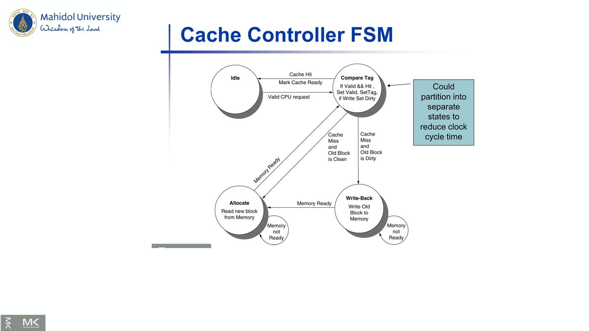
| State | ทำอะไร | ไปต่อเมื่อ |
|---|---|---|
| Idle | รอ | Valid CPU request → Compare Tag |
| Compare Tag | ถ้า Valid && Hit: Set Valid, Set Tag, ถ้าเขียนให้ Set Dirty | Cache Hit (Mark Cache Ready) → Idle / Cache Miss และ Old Block is Clean → Allocate / Cache Miss และ Old Block is Dirty → Write-Back |
| Write-Back | เขียน block เก่ากลับลง memory | Memory Ready → Allocate / Memory not Ready → วนอยู่ |
| Allocate | อ่าน block ใหม่จาก memory | Memory Ready → Compare Tag / Memory not Ready → วนอยู่ |
- หมายเหตุในภาพ: "Could partition into separate states to reduce clock cycle time"
19. Cache Coherence ใน Multiprocessor
19.1 Cache Coherence Problem
สมมติ CPU 2 cores แชร์ physical address space และใช้ write-through caches
| Time step | Event | CPU A's cache | CPU B's cache | Memory |
|---|---|---|---|---|
| 0 | 0 | |||
| 1 | CPU A reads X | 0 | 0 | |
| 2 | CPU B reads X | 0 | 0 | 0 |
| 3 | CPU A writes 1 to X | 1 | 0 | 1 |
→ CPU B's cache ยังเป็นค่าเก่า (0) = ไม่ coherent
19.2 Coherence Defined
- แบบไม่เป็นทางการ: การอ่าน คืนค่าที่เขียนล่าสุด
- แบบเป็นทางการ:
- P writes X; P reads X (ไม่มีการเขียนแทรก) → read คืนค่าที่เขียน
- P1 writes X; P2 reads X (นานพอหลังจากนั้น) → read คืนค่าที่เขียน (เทียบกับ CPU B อ่าน X หลัง step 3 ในตัวอย่าง)
- P1 writes X, P2 writes X → ทุก processor เห็นการเขียนในลำดับเดียวกัน ได้ค่าสุดท้ายเท่ากัน
19.3 Cache Coherence Protocols
Operations ที่ cache ใน multiprocessor ทำเพื่อให้ coherent:
- Migration of data to local caches → ลด bandwidth ของ shared memory
- Replication of read-shared data → ลดการแย่งเข้าถึง
- Snooping protocols → แต่ละ cache เฝ้าดูการอ่านเขียนบน bus
- Directory-based protocols → caches และ memory บันทึกสถานะการแชร์ของ block ใน directory
19.4 Invalidating Snooping Protocols
- cache ได้สิทธิ์ใช้ block แบบ exclusive เมื่อจะเขียน
- Broadcast invalidate message บน bus
- การอ่านครั้งต่อไปใน cache อื่นจะ miss
- cache ที่เป็นเจ้าของส่งค่าที่อัปเดตให้
| CPU activity | Bus activity | CPU A's cache | CPU B's cache | Memory |
|---|---|---|---|---|
| 0 | ||||
| CPU A reads X | Cache miss for X | 0 | 0 | |
| CPU B reads X | Cache miss for X | 0 | 0 | 0 |
| CPU A writes 1 to X | Invalidate for X | 1 | (invalid) | 0 |
| CPU B reads X | Cache miss for X | 1 | 1 | 1 |
19.5 Memory Consistency
- เมื่อไหร่การเขียนถูก processor อื่นเห็น? ("เห็น" = อ่านแล้วได้ค่าที่เขียน) — ไม่สามารถเกิดทันที
- สมมติฐาน:
- การเขียนเสร็จเมื่อทุก processor เห็นแล้ว
- processor ไม่สลับลำดับการเขียนกับการเข้าถึงอื่น
- ผลที่ตามมา:
- P writes X then writes Y → ทุก processor ที่เห็น Y ใหม่ ก็เห็น X ใหม่ด้วย
- processor สลับลำดับการอ่านได้ แต่สลับการเขียนไม่ได้
20. Real Stuff: ARM Cortex-A53, Intel Core i7, RISC-V System Instructions
20.1 Multilevel On-Chip Caches
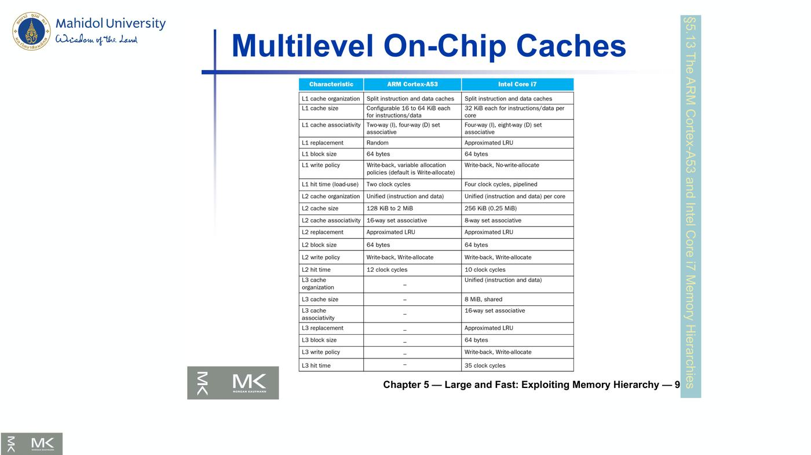
| Characteristic | ARM Cortex-A53 | Intel Core i7 |
|---|---|---|
| L1 cache organization | Split instruction and data caches | Split instruction and data caches |
| L1 cache size | Configurable 16 to 64 KiB each | 32 KiB each per core |
| L1 associativity | Two-way (I), four-way (D) | Four-way (I), eight-way (D) |
| L1 replacement | Random | Approximated LRU |
| L1 block size | 64 bytes | 64 bytes |
| L1 write policy | Write-back, variable allocation (default write-allocate) | Write-back, No-write-allocate |
| L1 hit time (load-use) | Two clock cycles | Four clock cycles, pipelined |
| L2 cache organization | Unified (instruction and data) | Unified per core |
| L2 cache size | 128 KiB to 2 MiB | 256 KiB (0.25 MiB) |
| L2 associativity | 16-way set associative | 8-way set associative |
| L2 replacement | Approximated LRU | Approximated LRU |
| L2 block size | 64 bytes | 64 bytes |
| L2 write policy | Write-back, Write-allocate | Write-back, Write-allocate |
| L2 hit time | 12 clock cycles | 10 clock cycles |
| L3 cache | – | Unified, 8 MiB shared, 16-way, approximated LRU, 64 bytes, write-back/write-allocate, 35 clock cycles |
20.2 2-Level TLB Organization
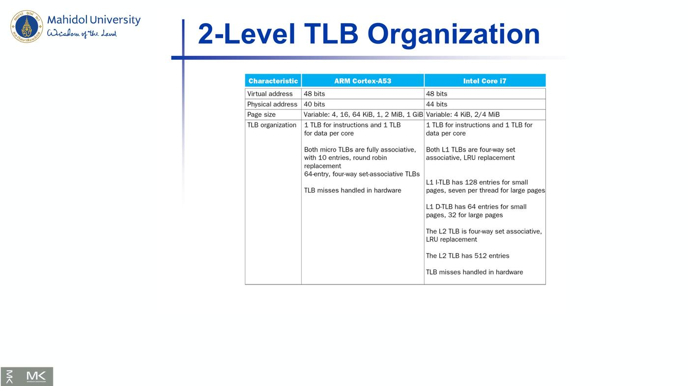
| Characteristic | ARM Cortex-A53 | Intel Core i7 |
|---|---|---|
| Virtual address | 48 bits | 48 bits |
| Physical address | 40 bits | 44 bits |
| Page size | Variable: 4, 16, 64 KiB, 1, 2 MiB, 1 GiB | Variable: 4 KiB, 2/4 MiB |
| TLB organization | 1 TLB for instructions and 1 TLB for data per core; micro TLBs fully associative 10 entries, round robin; 64-entry four-way set-associative TLBs; TLB misses handled in hardware | 1 TLB for instructions and 1 for data per core; L1 TLBs four-way, LRU; L1 I-TLB 128 entries (small pages), 7 per thread (large pages); L1 D-TLB 64 entries (small), 32 (large); L2 TLB four-way LRU, 512 entries; TLB misses handled in hardware |
20.3 Supporting Multiple Issue
- ทั้งคู่มี multi-banked caches เข้าถึงหลายครั้งต่อ cycle ได้ (ถ้าไม่มี bank conflicts)
- Optimization อื่น:
- Return requested word first
- Non-blocking cache: Hit under miss, Miss under miss
- Data prefetching
20.4 RISC-V System Instructions
| Type | Mnemonic | Name |
|---|---|---|
| Mem ordering | fence.i |
Instruction fence |
sfence.vm |
Address translation fence | |
| CSR access | csrrwi |
CSR read/write immediate |
csrrsi |
CSR read/set immediate | |
csrrci |
CSR read/clear immediate | |
csrrw |
CSR read/write | |
csrrs |
CSR read/set | |
csrrc |
CSR read/clear | |
| System | ecall |
Environment call |
ebreak |
Environment breakpoint | |
sret |
Supervisor exception return | |
wfi |
Wait for interrupt |
(CSR = Control and Status Register (เสริม))
20.5 DGEMM: Going Faster
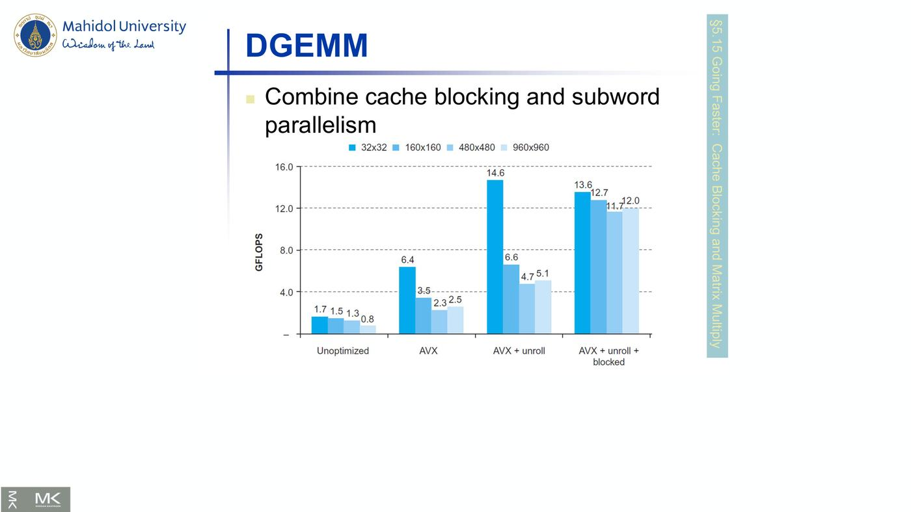
Combine cache blocking and subword parallelism
| Version | 32×32 | 160×160 | 480×480 | 960×960 |
|---|---|---|---|---|
| Unoptimized | 1.7 | 1.5 | 1.3 | 0.8 |
| AVX | 6.4 | 3.5 | 2.3 | 2.5 |
| AVX + unroll | 14.6 | 6.6 | 4.7 | 5.1 |
| AVX + unroll + blocked | 13.6 | 12.7 | 11.7 | 12.0 |
💡 blocking ทำให้ matrix ใหญ่ (960×960) เร็วขึ้นจาก 5.1 เป็น 12.0 GFLOPS
21. Fallacies & Pitfalls และ Concluding Remarks
21.1 Pitfalls
- Byte vs word addressing
- ตัวอย่าง: cache direct-mapped 32 bytes, block 4 bytes
- Byte 36 ไป block 1 (36/4 = 9, 9 mod 8 = 1)
- Word 36 ไป block 4 (36 mod 8 = 4)
- ตัวอย่าง: cache direct-mapped 32 bytes, block 4 bytes
- ละเลยผลของ memory system ตอนเขียนหรือสร้างโค้ด
- ตัวอย่าง: วนตาม row vs column ของ array
- Stride ใหญ่ → locality แย่
- Multiprocessor ที่แชร์ L2 หรือ L3 cache
- associativity น้อยกว่าจำนวน core → conflict misses
- core มากขึ้น → ต้องเพิ่ม associativity
- ใช้ AMAT ประเมิน out-of-order processors
- ไม่นับผลของ non-blocked accesses → ใช้ simulation แทน
- ขยาย address range ด้วย segments (เช่น Intel 80286)
- segment ไม่ใหญ่พอเสมอไป
- คำนวณ address ซับซ้อน
- ทำ VMM บน ISA ที่ไม่ได้ออกแบบมาเพื่อ virtualization
- เช่น non-privileged instructions ที่เข้าถึง hardware resources
- ต้อง ขยาย ISA หรือ ห้าม guest OS ใช้คำสั่งที่มีปัญหา
21.2 Concluding Remarks ⭐
- Fast memories are small, large memories are slow
- เราอยากได้ memory ที่ทั้งเร็วและใหญ่ ☹
- Caching ให้ภาพลวงนั้น ☺
- Principle of locality: โปรแกรมใช้ memory space ส่วนเล็ก ๆ บ่อย
- Memory hierarchy: L1 cache ↔ L2 cache ↔ … ↔ DRAM memory ↔ disk
- การออกแบบ memory system สำคัญมากสำหรับ multiprocessors
22. คำศัพท์สำคัญ
| คำศัพท์ | ความหมาย | จำง่าย ๆ ว่า |
|---|---|---|
| Temporal / Spatial locality | ใช้ซ้ำเร็ว ๆ นี้ / ใช้ของใกล้ ๆ | ลูป / array |
| Memory hierarchy | ลำดับชั้น memory เร็ว-เล็ก ถึง ช้า-ใหญ่ | พีระมิด |
| Block (line) | หน่วยคัดลอกระหว่างระดับ | |
| Hit / Miss ratio | hits/accesses, 1 − hit ratio | |
| Miss penalty | เวลาที่ใช้เมื่อ miss | |
| SRAM / DRAM | เร็ว แพง ไม่ refresh / ถูก ต้อง refresh (capacitor) | cache / main memory |
| DDR / QDR | ส่งทั้งขอบขึ้นลง / แยก in-out | |
| Burst mode, SDRAM, Banking | เพิ่ม bandwidth ของ DRAM | |
| Flash (NOR / NAND) | nonvolatile; random access / block access ถูกกว่า | |
| Wear leveling | กระจายการเขียน flash | |
| Seek / Rotational latency | เลื่อนหัว / รอหมุน (ครึ่งรอบ) | |
| Direct mapped | block mod #blocks ที่เดียว | ล็อกเกอร์ตามเลขท้าย |
| Tag / Valid bit / Index / Offset | บิตบน / มีข้อมูลไหม / ตำแหน่ง / ตำแหน่งใน block | |
| Fully associative | วางที่ไหนก็ได้ ค้นทั้งหมด | |
| n-way set associative | block mod #sets, n ที่ต่อ set | |
| LRU / FIFO / LFU / Random | replacement algorithms | |
| Write-through / Write-back | เขียนทั้งสองระดับ / เขียนแค่ cache แล้วเขียนกลับตอนแทนที่ | |
| Dirty bit | block ถูกแก้แล้ว | |
| Write buffer | พักข้อมูลรอเขียน | |
| Allocate on miss / Write around | ดึง block / ไม่ดึง ตอน write miss | |
| Split / Unified cache | แยก I/D / รวม | |
| Memory stall cycles | cycles ที่เสียจาก miss | |
| AMAT | Hit time + Miss rate × Miss penalty | |
| Multilevel cache | L1 เน้น hit time, L2 เน้น miss rate | |
| Global miss rate | miss ที่ไปถึง main memory | |
| Blocking (DGEMM) | แบ่ง matrix ให้พอดี cache | |
| MTTF / MTTR / MTBF / Availability | เวลาถึงเสีย / เวลาซ่อม / MTTF+MTTR / MTTF÷(MTTF+MTTR) | |
| Hamming distance | จำนวนบิตต่างกัน | |
| SEC / SEC-DED | แก้ 1 บิต / แก้ 1 ตรวจ 2 | ECC DRAM |
| VMM | Virtual Machine Monitor | |
| Virtual memory | main memory เป็น cache ของ disk | |
| Page / Page fault | block / miss ของ VM | |
| Page table / PTE | ตาราง VPN → PPN | |
| Reference (use) bit | ใช้ประมาณ LRU | |
| TLB | cache ของ PTE ใน CPU | โพยเบอร์ |
| Aliasing | virtual address ต่างกันชี้ physical เดียว | |
| Supervisor (kernel) mode, ecall | protection | |
| Compulsory / Capacity / Conflict misses | 3 Cs | ครั้งแรก / cache เล็ก / แย่ง set |
| FSM | Idle, Compare Tag, Write-Back, Allocate | |
| Cache coherence | อ่านได้ค่าที่เขียนล่าสุด | |
| Snooping / Directory-based protocols | เฝ้าดู bus / บันทึกสถานะใน directory | |
| CSR | Control and Status Register |
23. สรุปท้ายบท / จุดที่มักออกสอบ
เรื่องที่ต้องจำ
- Temporal vs spatial locality และการใช้ประโยชน์ผ่าน hierarchy (disk → DRAM → SRAM)
- Hit ratio, miss ratio = 1 − hit ratio, miss penalty
- ตัวเลขเทคโนโลยี: SRAM 0.5–2.5ns $2000–5000/GB, DRAM 50–70ns $20–75/GB, disk 5–20ms $0.20–2/GB
- DRAM = capacitor + refresh; DDR/QDR; flash NOR vs NAND, wear leveling
- Disk access example: 4 + 2 + 0.005 + 0.2 = 6.2ms (seek 1ms → 3.2ms)
- Elements of cache design 7 หัวข้อ
- Direct mapped: block mod #blocks, tag, valid bit; ตัวอย่าง 22,26,22,26,16,3,16,18
- Address 1200, 16 bytes/block, 64 blocks → block 11; offset 4, index 6 บิต
- Block size: ใหญ่ลด miss (spatial) แต่แย่งกัน/pollution/miss penalty สูง
- Write-through (CPI = 1 + 0.1 × 100 = 11) → write buffer; write-back ใช้ dirty bit
- FastMATH: I 0.4%, D 11.4%, avg 3.2%
- 1-word DRAM: miss penalty 65 cycles, 0.25 B/cycle; 4-word wide 17 cycles 0.94; 4-bank 20 cycles 0.8
- CPI example: 2 + 2 + 1.44 = 5.44 (2.72 เท่า)
- AMAT = hit + miss rate × penalty (1 + 0.05×20 = 2ns)
- Associativity example 0,8,0,6,8: direct 5 miss, 2-way 4 miss, fully 3 miss
- Miss rate: 1-way 10.3%, 2-way 8.6%, 4-way 8.3%, 8-way 8.1% (diminishing returns)
- Multilevel example: CPI 9 → 3.4 (2.6 เท่า)
- L1 เน้น hit time, L2 เน้น miss rate
- MTBF = MTTF + MTTR; Availability = MTTF/(MTTF+MTTR)
- Hamming: distance 2 ตรวจ 1 บิต, 3 แก้ 1 ตรวจ 2; parity ที่ตำแหน่ง 2^k; SEC/DED ตาราง H กับ pₙ; ECC DRAM 8 บิตต่อ 64 บิต
- VMM: trap privileged instructions, timer virtualization
- Virtual memory: page, page fault, page table (VPN index → PPN, valid, reference, dirty), write-back เท่านั้น, LRU approx
- TLB: 16–512 PTEs, hit 0.5–1 cycle, miss 10–100 cycles, miss rate 0.01%–1%
- Page fault handler 5 ขั้น
- 4 คำถามของ hierarchy: placement, finding, replacement, write policy
- 3 Cs และ design trade-offs
- Cache FSM: Idle → Compare Tag → (hit) Idle / (miss clean) Allocate / (miss dirty) Write-Back → Allocate → Compare Tag
- Cache coherence และ invalidating snooping protocol
- Pitfall byte vs word: byte 36 → block 1, word 36 → block 4
คู่ที่มักสับสน
| คู่ | ต่างกันที่ |
|---|---|
| Temporal vs Spatial locality | ใช้ซ้ำ vs ใช้ของใกล้ |
| SRAM vs DRAM | เร็ว แพง ไม่ refresh vs ถูก จุ ต้อง refresh |
| NOR vs NAND flash | random access vs block access, ถูกกว่า |
| Direct vs Set vs Fully associative | 1 ที่ vs n ที่ vs ทุกที่ |
| Write-through vs Write-back | เขียนสองระดับ vs เขียนตอนแทนที่ (dirty) |
| Capacity vs Conflict miss | cache เล็ก vs แย่ง set |
| Cache miss vs Page fault | ดึงจาก memory vs ดึงจาก disk (ล้าน cycles) |
| TLB miss vs Page fault | PTE ไม่อยู่ใน TLB vs page ไม่อยู่ใน memory |
| MTTF vs MTBF | ถึงเสีย vs รวมเวลาซ่อม |